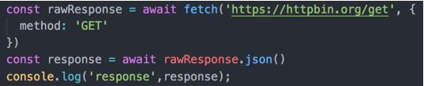
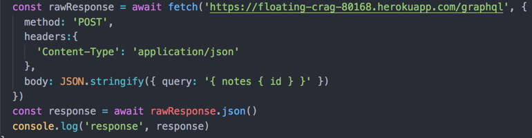
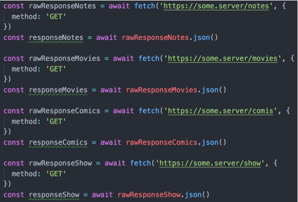
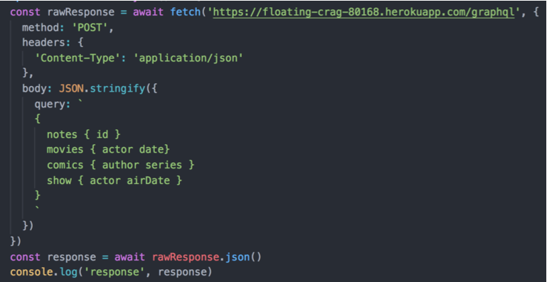
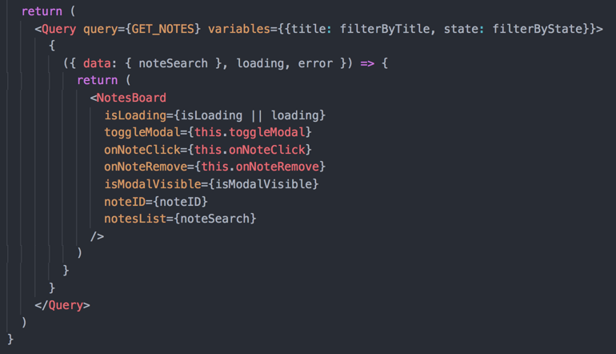
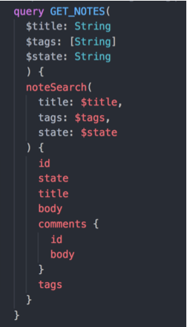
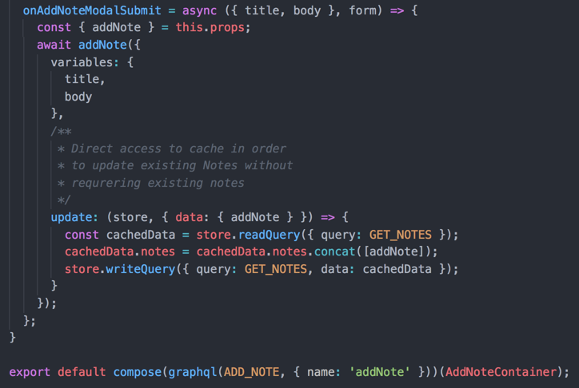
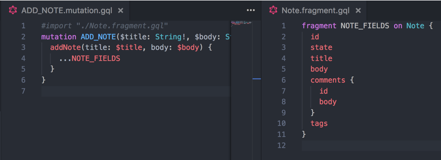

Fullstack Intro to GraphQL based on example application

+

GraphQL on Front-end - what's wrong with REST?
| GraphQL | REST |
|---|---|
| One endpoint to access whole API | Many endpoints with different schema |
| Retrieve only the data your client needs in a single request (flexibility) | Over/under fetching data due to REST nature |
| Whole API is documented and easily accessible ( Insomia, GraphiQL) | We might have documentation ( but honestly - how often ? :D ) |
How does query looks like?
Code sample - GraphQL vs REST
REST
GraphQL
Code sample - GraphQL vs REST - but let's fetch more data :)


How to start with GraphQL?
https://www.howtographql.com/
GraphQL clients:
- No client
- Apollo client (Meteor)
- Relay (Facebook)
API exploration Tools
- Insomia
- GraphiQL
- Apollo client chrome extension
GraphQL clients:
- No client
- Apollo client (Meteor)
- Relay (Facebook)
API exploration Tools
- Insomia
- GraphiQL
- Apollo client chrome extension
Apollo client - let's fetch data!


Apollo client - let's send data!


Apollo client - cache

Apollo client - my opinion after while
- Good for small, simple projects
- Nice way to structure code
- Huge community - but most of people seek help
- Forcing to use apollo local state (they dropped redux integration)
- Cache manupulation is complex
- Poor documentation
- Too much responsibility for open source framework
Sorry for the long presentation. Here is a potato